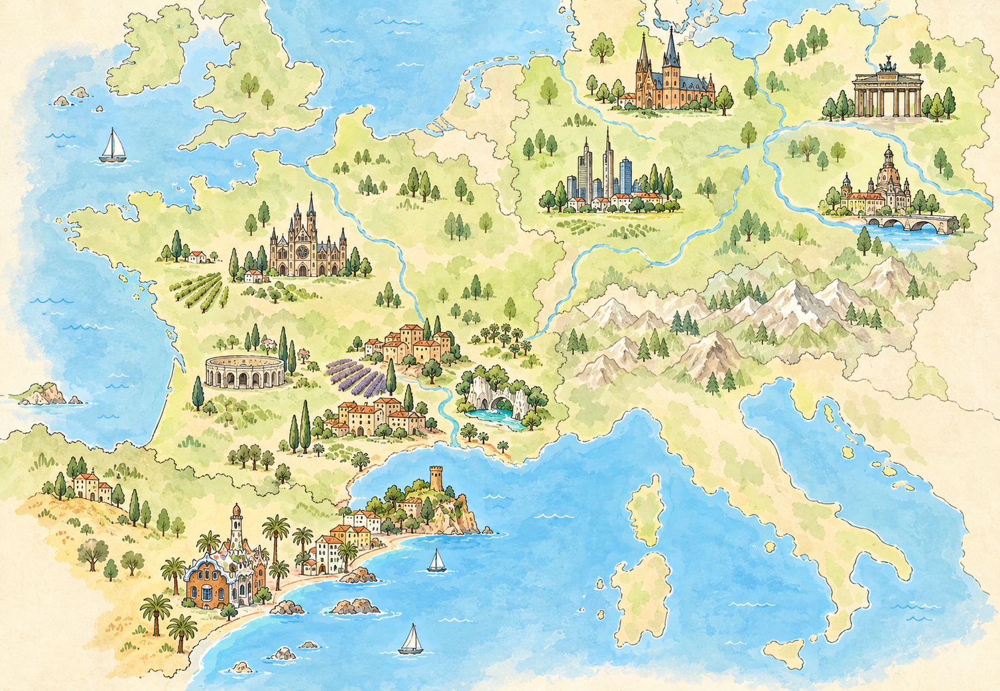

9/25周四
法兰克福 · 落地日
下午：机场 S8/S9 → 中央火车站 → 酒店寄存 / 入住。
傍晚：罗马广场 → 法兰克福大教堂 → 铁桥 → 博物馆岸 → 老城夜景。
从法兰克福启程，穿越德国城市与历史，再从南法一路自驾到巴塞罗那——一份可以随时查看、快速决策的旅行路线图。

把这次旅程画成一张旅行手账地图

德国在右上 · 法国在中左 · 巴塞罗那在最下方
Germany · France · Spain
按真实经纬度关系绘制，标出城市与南法小镇
按每日主要停留城市显示 · 每 24 小时自动更新
按日期浏览每天的重点、交通和住宿
下午：机场 S8/S9 → 中央火车站 → 酒店寄存 / 入住。
傍晚：罗马广场 → 法兰克福大教堂 → 铁桥 → 博物馆岸 → 老城夜景。
中午：搭乘 ICE 前往汉诺威（11:46–14:05 方案）。抵达后游览 Altstadt、新市政厅、莱布尼茨故居外观与内湖。
备选交通信息：计划中另列有柏林火车总站 12:40–14:20，请出发前确认实际出发城市。
白天：海恩豪森皇家花园，或斯普伦格尔博物馆；下午逛车站周边商圈。
20:31–22:12：火车前往柏林。
10:00–12:05：前往莱比锡，游览圣托马斯教堂、巴赫博物馆、奥古斯都广场与商业街。
19:25–20:40：前往德累斯顿，视时间欣赏布吕尔平台夜景。
全天：茨温格宫、森帕歌剧院、圣母教堂、绿穹珍宝馆（需预约），或沿易北河谷散步。
16:53–18:29：返回柏林。
勃兰登堡门、国会大厦（需预约）、博物馆岛、东区画廊、波茨坦广场。晚间整理行李，准备飞往马赛。
马赛机场与队伍汇合，午餐后驱车北上约 1 小时 12 分钟，入住阿维尼翁郊外酒店。
下午：阿尔勒古罗马竞技场、梵高咖啡馆。晚餐享用城堡庄园普罗旺斯家常料理。
上午：戈尔德石头城 → 梅纳村。下午：鲁西永红土城 → 泉水镇。
晚上回城堡庄园休闲，可体验泳池或 SPA。薰衣草田已替换为秋季更适宜的山石村落与自然景观。
上午：古罗马竞技场、四方神殿。下午：沿 A9 高速南行至法国边境城市佩皮尼昂，为次日跨境做准备。
晚餐：地中海海鲜料理。
08:00：出发跨境；10:00–13:00：滨海托萨城堡、海滩与老城步道；13:00：海鲜饭午餐。
15:30–18:00：锡切斯白色老城、粉色教堂与海滩；19:30 前：巴塞罗那市区还车，入住后逛格拉西亚大道。
圣家族大教堂（登塔可选）、巴特罗之家、米拉之家；下午在格拉西亚区休憩，晚上逛兰布拉大道。
上午：缆车、蒙特惠奇城堡、奥林匹克环。下午：主教座堂、国王广场、Born 区毕加索博物馆。晚上观赏魔幻喷泉灯光秀。
上午：古埃尔公园（需预约）。下午：巴塞罗内塔海滩、旧港哥伦布纪念碑。傍晚乘 R2 Nord 前往机场酒店。
搭乘 MU250 航班，次日 05:25 抵达上海浦东，旅程结束。
铁路串联的历史城市线 · 9/25–9/30
城际以 ICE 火车 为主；周日德国多数商店歇业，补给请提前安排。
从普罗旺斯村落到地中海边境 · 10/1–10/4
预订时确认 France → Spain → France 跨境保险和费用；老城优先停车后步行。
两座海滨小镇 + 巴塞罗那城市收官 · 10/4–10/8
10/5 高迪建筑 → 10/6 山城与老城 → 10/7 海滩与机场酒店。热门景点建议提前预约。
已确认与待定状态一览
| 日期 | 城市 | 酒店 / 住宿 | 参考说明 |
|---|---|---|---|
| 9.25 | 法兰克福 | 东横Inn法兰克福火车站店 | 已定 · 近中央火车站 |
| 9.26 | 汉诺威 | 汉诺威东火车总站城际酒店 | 已定 · 近中央火车站 |
| 9.27、9.29–9.30 | 柏林 | 本地住宅 | 无需额外预订 |
| 9.28 | 德累斯顿 | ibis Dresden Zentrum / 老城酒店 | 已订 · 近老城核心景点 |
| 10.1–10.2 | 普罗旺斯 | 待定 | 考虑城堡酒店 |
| 10.3 | 佩皮尼昂 | 当地四星酒店 | 待定 |
| 10.4–10.6 | 巴塞罗那市区 | 待定 | 待定 |
| 10.7 | 巴塞罗那机场 | 机场附近酒店 | 待定 · 方便次日返程 |
根据当天预报给出的轻量化穿搭建议 · 兼顾舒适与出片
把需要提前确认的事情放在一起
圣家堂、古埃尔公园、绿穹珍宝馆、国会大厦等热门景点，建议提前 2–3 周购票。
普罗旺斯城堡酒店、跨境租车保险、10/4 还车网点，以及 9/26 的火车出发城市。
周日德国商店普遍关门；长途驾驶轮换驾驶，日均驾驶尽量不超过 4 小时。